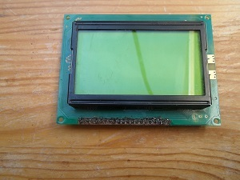
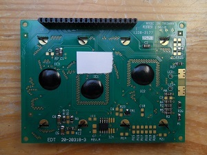
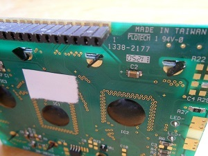
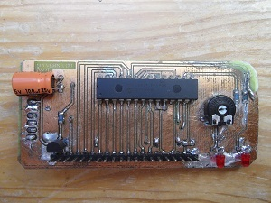
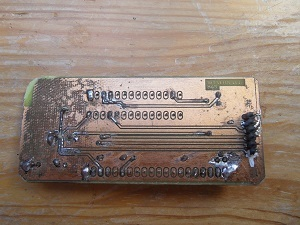
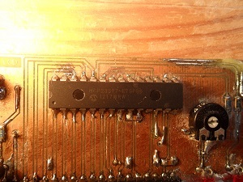
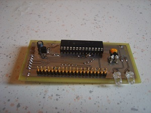
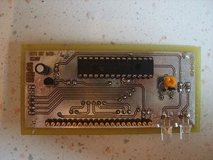
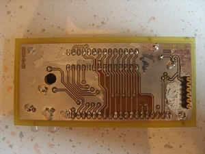
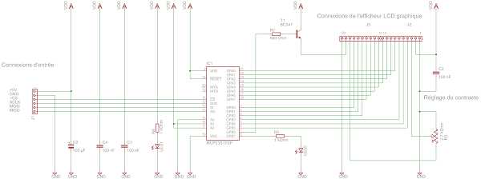

Vous n'êtes pas seuls dans l'Univers !

/
SPI et LCD : Pilotage d'un afficheur graphique
Pilotage d'un afficheur LCD de type graphique par une liaison SPI.
Cette page indique comment réaliser une carte, qui permet l'interfaçage avec un afficheur LCD graphique et une liaison SPI.
Un microcontrôleur de type « STM32F100RBT6 » et un PIC18F4550 sont utilisés pour piloter ce module d'affichage graphique.
 Démo Afficheur LCD Graphique et Liaison SPI
Démo Afficheur LCD Graphique et Liaison SPI
1) Présentation
{kind=link}
{kind=link}
Cet article présente deux cartes :
- La première est optimisée pour le routage, elle présente un nombre réduit de vias et de croisements de pistes, ce qui implique des permutations de broches, comme indiqué dans le tableau suivant :
| Carte « SPI et LCD », première version | GPB0 | GPB1 | GPB2 | GPB3 | GPB4 | GPB5 | GPB6 | GPB7 |
|---|---|---|---|---|---|---|---|---|
| Afficheur LCD graphique | DB7 | DB6 | DB5 | DB4 | DB3 | DB2 | DB1 | DB0 |
Le logiciel devra donc traiter cette permutation de broches, ce qui peut être pénalisant en cas d'utilisation d'un composant programmable peu rapide.
- La deuxième est optimisée pour l'écriture du code, elle ne présente pas de permutations de broches, mais un plus grand nombre de vias et de croisements de pistes.
Si vous êtes intéressé par la réalisation de l'une de ces deux cartes, choisissez la carte à fabriquer en fonction des composants programmables que vous souhaitez mettre en œuvre, et en fonction des moyens dont vous disposez pour la gravure et la soudure de cartes électroniques !
Les programmes qui mettent en œvre ces modules ont été écrit pour fonctionner à l'aide d'une carte de type « STM32DISCOVERY ».
Pour obtenir plus d'informations à propos de ces cartes, ouvrez ce lien.
Le composant utilisé pour effetuer les transferts entre la liaison SPI et l'afficheur LCD est un expanseur de port, qui est fabriqué par MICROCHIP, et qui a la référence « MCP23S17 ».
2) Montage 1
|  |  |  |
{kind=link}
{kind=link}
{kind=link}
|  |  |  |
{kind=link}
{kind=link}
{kind=link}
2-1) Schéma électronique
{kind=link}
2-2) Typon
{kind=link}

Schéma électronique et typon de la première version de la carte d'adaptation SPI vers LCD
Logiciel de dessin : EAGLE 6.4.0
Télécharger le fichierEffectuez un clic droit, puis sélectionnez l'option « Enregistrer la cible du lien sous... », pour télécharger le fichier (357.64 Ko)
2-3) Code source
Correspondances entre les broches de la carte « STM32DISCOVERY » et de la carte « SPI et LCD », première version :
| Carte « STM32DISCOVERY » | +5V | GND | PA1 | PA5 | PA6 | PA7 |
|---|---|---|---|---|---|---|
| Carte « SPI et LCD », première version | +5V | GND | ~CS_MCP23S17 | SCLK_MCP23S17 | MISO_MCP23S17 | MOSI_MCP23S17 |
Piloter un afficheur graphique avec un MCP23S17, première version : Fichiers C
Cible : STM32F100RB
Compilateur : Keil µVision4
Télécharger le fichierEffectuez un clic droit, puis sélectionnez l'option « Enregistrer la cible du lien sous... », pour télécharger le fichier (20.93 Ko)
3) Montage 2
|  |  |  |
{kind=link}
{kind=link}
{kind=link}
{kind=link}
3-1) Schéma électronique

{kind=link}
3-2) Typon
{kind=link}
Schéma électronique et typon de la deuxième version de la carte d'adaptation SPI vers LCD
Logiciel de dessin : EAGLE 6.4.0
Télécharger le fichierEffectuez un clic droit, puis sélectionnez l'option « Enregistrer la cible du lien sous... », pour télécharger le fichier (376.24 Ko)
3-3) Code source
Correspondances entre les broches de la carte « STM32DISCOVERY » et de la carte « SPI et LCD », deuxième version :
| Carte « STM32DISCOVERY » | +5V | GND | PA1 | PA5 | PA6 | PA7 |
|---|---|---|---|---|---|---|
| Carte « SPI et LCD », deuxième version | +5V | GND | ~CS_MCP23S17 | SCLK_MCP23S17 | MISO_MCP23S17 | MOSI_MCP23S17 |
Piloter un afficheur graphique avec un MCP23S17, deuxième version : Fichiers C
Cible : STM32F100RB
Compilateur : Keil µVision4
Télécharger le fichierEffectuez un clic droit, puis sélectionnez l'option « Enregistrer la cible du lien sous... », pour télécharger le fichier (20.8 Ko)
Correspondances entre les broches du microcontrôleur PIC18F4550 et de la carte « SPI et LCD », deuxième version :
| Microcontrôleur PIC18F4550 | VDD | VSS | RA5 | RB0 | RB1 | RC7 |
|---|---|---|---|---|---|---|
| Carte « SPI et LCD », première version | +5V | GND | ~CS_MCP23S17 | MISO_MCP23S17 | SCLK_MCP23S17 | MOSI_MCP23S17 |
Piloter un afficheur graphique avec un MCP23S17, deuxième version : Fichiers C
Cible : PIC18F4550
Compilateur : MCC18
Télécharger le fichierEffectuez un clic droit, puis sélectionnez l'option « Enregistrer la cible du lien sous... », pour télécharger le fichier (90.84 Ko)
Commentaires (0)
Ajouter un commentaire